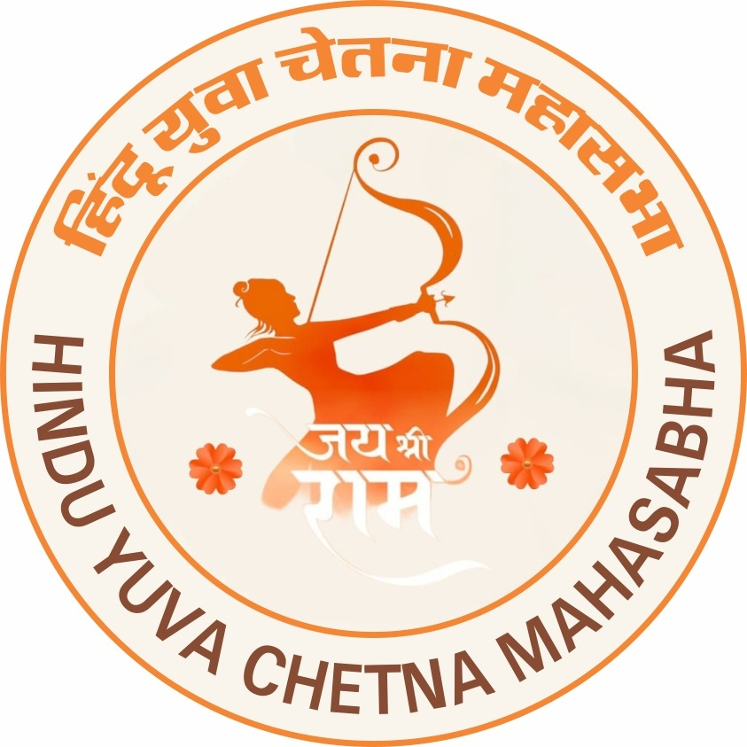
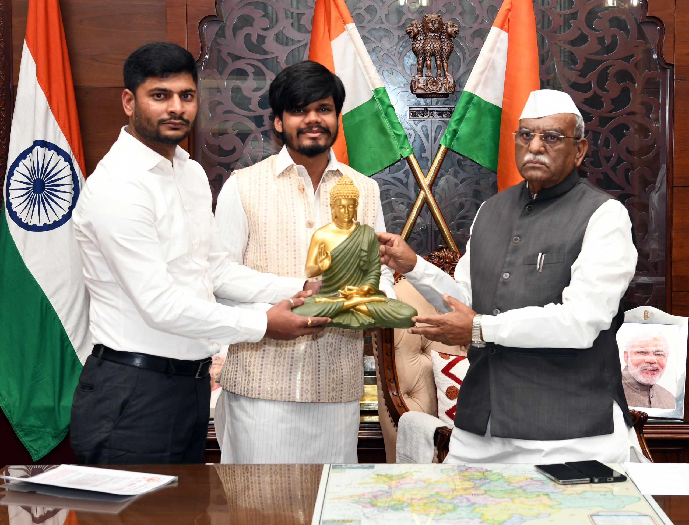
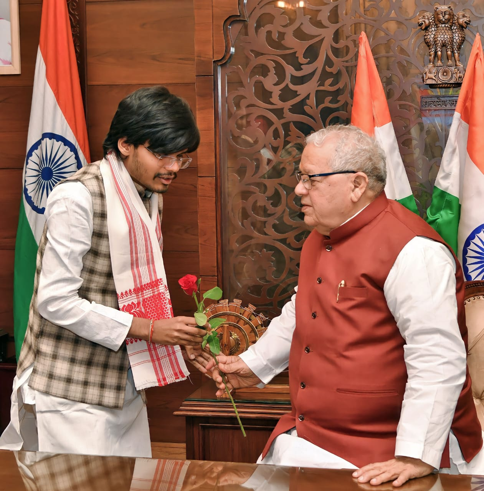
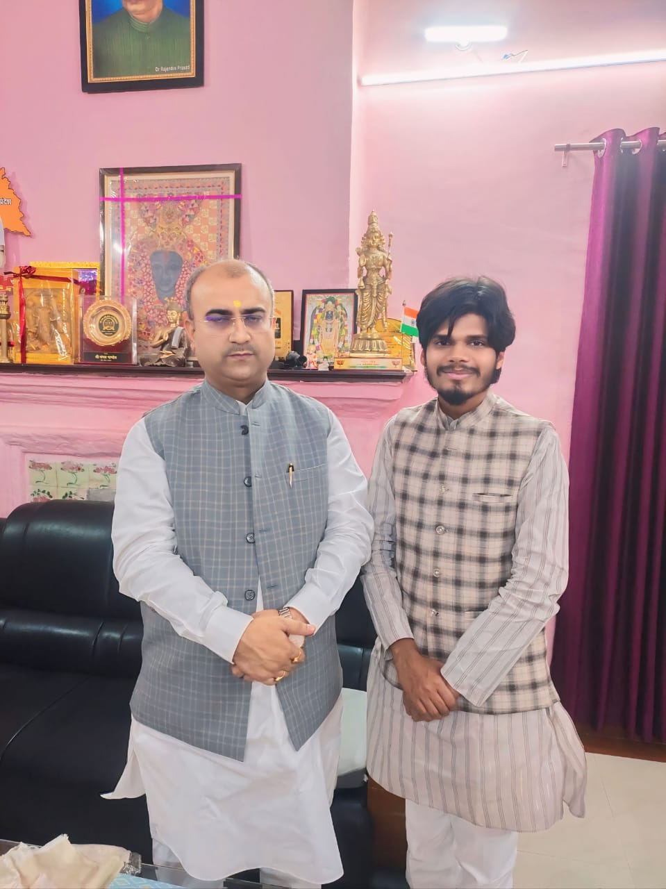

हमारे बारे में
हिन्दू युवा चेतना महासभा एक गैर-राजनीतिक संगठन है जो हिन्दू युवाओं को संगठित कर उन्हें धर्म, संस्कृति और राष्ट्र की सेवा के लिए प्रेरित करता है। हमारा उद्देश्य युवाओं में राष्ट्रीयता, सामाजिक समरसता और सेवा की भावना को मजबूत करना है। हम भारत की गौरवशाली विरासत को संरक्षित करने और उसे भविष्य की पीढ़ियों तक पहुंचाने के लिए प्रतिबद्ध हैं।
और पढ़ें
हमारी प्रमुख गतिविधियाँ
सांस्कृतिक कार्यक्रम
युवाओं में अपनी गौरवशाली संस्कृति के प्रति जागरूकता और सम्मान बढ़ाने के लिए विभिन्न सांस्कृतिक कार्यक्रमों, जैसे कि पारंपरिक त्योहारों, लोक कला प्रदर्शनों और ऐतिहासिक महापुरुषों की जयंतियों का आयोजन।
सेवा कार्य
समाज के जरूरतमंद और वंचित वर्गों की सहायता के लिए रक्तदान शिविर, वस्त्र वितरण, अन्नदान और चिकित्सा शिविरों का नियमित संचालन साथ ही हिन्दू परिवारों के साथ किसी भी अप्रिय घटना पर तत्काल पहुंच आर्थिक एवं प्रशाशनिक सहयोग हेतु कार्य संचालन।
जागरूकता अभियान
हिन्दू युवा चेतना महासभा द्वारा देश के विभिन्न प्रांतो में लगभग 2000 से अधिक कार्यशाला आयोजित कर हिन्दू एक्शन फाॅर्स टीम का निर्माण जो लवजेहाद, धर्मान्तरण, लैंडजेहाद, आदि गतिविधिया रोकने के लिए कार्यरत है | हिन्दू धर्म और संस्कृति के वैज्ञानिक और दार्शनिक पहलुओं पर जागरूकता फैलाने के लिए सेमिनार, कार्यशालाएं और अभियानों का आयोजन।
हमसे जुड़ें
यदि आप भी धर्म, संस्कृति और राष्ट्र की सेवा में अपना योगदान देना चाहते हैं, तो हिन्दू युवा चेतना महासभा से जुड़ें।
अभी संपर्क करेंनवीनतम समाचार

हिंदू युवा चेतना महासभा के आगामी कार्यक्रम से राज्यपाल राजस्थान श्री हरीभाउजी बागड़े जी को अवगत कराते श्री करुणेश पांडेय राष्ट्रीय संयोजक

महामहिम राज्यपाल एवं पूर्व केंद्रीय मंत्री कलराज मिश्र जी से भेंट कर कार्यक्रम हेतु आमंत्रित करते हुए ।

कैबिनेट स्वास्थ एवं कानून मंत्री बिहार मंगल पांडेय की को संगठन के कार्यों से अवगत कराते हुए ।